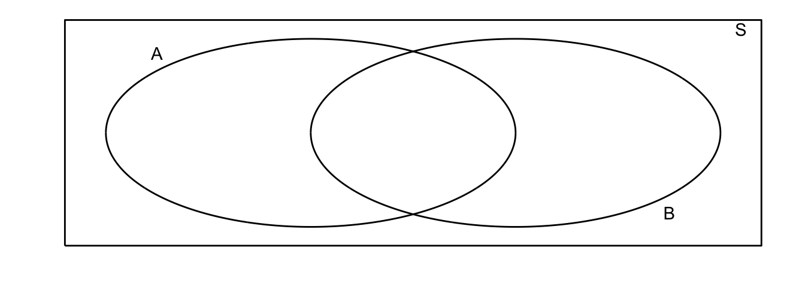

Chapter 1 Introduction to Probability
1.1 History of Probability
1.2 Interpretations of Probability
1.3 Experiments and Events
1.4 Review of Set Theory (D&S 1.4)
- Create a sample space \(\mathcal{S}\) where
- Where the the number of outcomes is finite.
- Define events (subsets of \(\mathcal{S}\)) that do not have a 1-to-1 correspondence with the outcomes.
- Create a sample space \(\mathcal{S}\) where
- Where the the number of outcomes is countably infinite.
- Define a finite number of events (subsets of \(\mathcal{S}\)) that do not have a 1-to-1 correspondence with the outcomes and that the union of all your events is \(\mathcal{S}\).
- Define an infinite number of events (subsets of \(\mathcal{S}\)) that do not have a 1-to-1 correspondence with the outcomes and that the union of all your events is \(\mathcal{S}\).
- Create a sample space \(\mathcal{S}\) where
- Where the the number of outcomes is uncountably infinite.
- Define a finite number of events (subsets of \(\mathcal{S}\)) that do not have a 1-to-1 correspondence with the outcomes and that the union of all your events is \(\mathcal{S}\).
- Define an countably infinite number of events (subsets of \(\mathcal{S}\)) that do not have a 1-to-1 correspondence with the outcomes and that the union of all your events is \(\mathcal{S}\).
It is time to define the set of events more carefully. The take-home idea is that if you add an event, say \(A\), you also add some other events related to \(A\). The rules are summarized below.
- \(\mathcal{S}\) is an event. This is to say something will happen.
- If \(A\) is an event, then \(A^c\) is also an event.
- If \(A_i\) is a countable sequence of events, then \(\cup_{i=1}^\infty A_i\) is also an event.
Prove that \(\emptyset\) is is an event.
Prove two of the conclusions of theorem 1.4.4. I would expect a proof of \(A \cup A^c=\mathcal{S}\) to look something like, “Let \(e\) be an arbitrary event in \(\mathcal{S}\). Due to the nature of complements, either \(e \in A\) or \(e \in A^c\). Therefore \(e in A \cup A^c\) but because \(e\) was an arbitrary element of \(\mathcal{S}\) then \(\mathcal{S} \subset A \cup A^c\). However because \(\mathcal{S}\) is the set of all possible events, then \(A \cup A^c \subset \mathcal{S}\) and thus \(A \cup A^c = \mathcal{S}\).”
Chapter problem 1.4.1. Suppose \(A \subset B\). Show that \(B^c \subset A^c\). Do this in a similar fashion as problem 5.
Chapter problem 1.4.2. Show this by Venn diagrams.
Chpater problem 1.4.3. Prove DeMorgan’s Laws. Prove this via Venn diagrams.
Chapter problem 1.4.6.
Chapter problem 1.4.7
Chapter problem 1.4.13
Chapter problem 1.4.14
1.5 Definition of Probability (D&S 1.5)
Axiom 1 For every event \(A\), the probabilitity of the event, denoted \(Pr(A)\) has the property \(Pr(A) \ge 0\)
Axiom 2 If an event is sure to occur, then the event has probability 1. That is, \(Pr(\mathcal{S})=1\).
Axiom 3 For every finite or countably infinite sequence of events \(A_1, \, A_2, \, \dots\) where \(A_i \cap A_j = \emptyset \;\;\forall\; i,j\) (that is the sequence \(A_i\) is pairwise disjoint), then \[Pr\left( \bigcup_{i=1}^\infty A_i \right) = \sum_{i=1}^\infty Pr\left(A_i\right)\]
Consider drawing a single card from a well shuffled deck of playing cards (4 suits, each with 13 cards Ace, two, …, Queen, King). Consider the events \(H,S,C,D\), which are drawing a \(H\)eart, \(S\)pade, \(C\)lub, and \(D\)iamond. Explain why \(H\) and \(S\) are disjoint but \(H^c\) and \(S^c\) are not.
Prove \(Pr(\emptyset) = 0\)
Argue that Axiom 3 should have been “For every countably infinite sequence of events \(A_i\)” because you can pad any finite sequence with an infinite sequence of empty sets.
Prove \(Pr(A^c) = 1 - Pr(A)\)
Often we will draw Venn diagrams where the area of the event is its probability.

Many of the probability calculations can be most easily understood using a Venn diagram along with the algebraic proof.
Prove if \(A \subset B\) then \(Pr(A) \le Pr(B)\). Show this formally and via Venn diagrams
Prove that \(Pr(A) = Pr(A \cap B) + Pr( A \cap B^c)\) Show this formally and via Venn diagrams
Prove that \(Pr( A \cup B) = Pr(A) + Pr(B) - Pr( A \cap B)\) Show this formally and via Venn diagrams. Notice our Axiom 3 addresses the case where \(A\) and \(B\) are disjoint.
- Consider events \(A\) and \(B\) where \(Pr(A)=1/3\) and \(Pr(B) = 1/2\). Determine the value of \(Pr(A \cap B^c)\) when
- \(A\) and \(B\) are disjoint
- \(A \subset B\)
- \(Pr(A \cap B) = 1/8\)
- Suppose that Adam has a probability of failing an exam of \(Pr(A) = 0.5\) while Bob only has a probability of failing the exam of \(Pr(B) = 0.2\). Suppose the probability of both students failing is \(0.1\)
- What is the probability that at least one of these two students will fail?
- What is the probability that neither student will fail?
- What is the probability that exactly one student will fail?
- A point \((x,y)\) is to be selected from the unit square \(\mathcal{S}\) (\(0\le x\le 1,\; 0\le y \le 1\)). Suppose that the probability that the point is selected from a specific region is equal to the area of the region. Find the probabiliy the point selected is from each of the following regions:
- \((x,y)\) such that \((x-1/2)^2 + (y-1/2)^2 \ge 1/4\)
- \((x,y)\) such that \(1/2 \le x+y \le 3/2\)
- \((x,y)\) such that \(y \le 1-x^2\)
- \((x,y)\) such that \(x=y\)
- Bonferroni’s Inequality. Let \(A_1, A_2, \dots\) be an arbitrary infinite squence of events. Define the seqence of events \(B_1, B_2, \dots\) as \[B_1=A_1\] \[B_2 = A_1^c \cap A_2\] \[B_3 = A_1^c \cap A_2^c \cap A_3\] \[B_4 = A_1^c \cap A_2^c \cap A_3^c \cap A_4\]
- Prove that \(B_i \subset A_i\), \(B_i \cap B_j = \emptyset\) for \(i\ne j\), and that \(\bigcup_{i=1}^n A_i \;=\; \bigcup_{i=1}^n B_i\).
- Prove that \[Pr\left( \bigcup_{i=1}^n A_i \right) = \sum_{i=1}^n Pr(B_i)\]
- Prove that \[Pr\left( \bigcup_{i=1}^n A_i \right) \le \sum_{i=1}^n Pr(A_i)\]
- Using the previous result (b), prove that for sets \(D_1,D_2,\dots,D_n\) that \[Pr\left( \bigcap_{i=1}^n D_i \right) \ge 1 - \sum_{i=1}^n Pr(D_i^c)\]
1.6 Finite Sample Spaces (D&S 1.6)
When dealing with sample spaces with only a finite number of outcomes (say \(n\) outputcomes \(s_i\)), it is often convenient to define each outcome as an event.
Let \(s_i\) be outcomes in the sample space \(\mathcal{S}\). Let each of these outcomes have probability \(p_i\).
For the axioms of probability to hold then: \[p_i \ge 0\] \[\sum_{i=1}^n p_i = 1\]
When fair dice, we assume that each side has equal probability of being rolled. For rolling a 6-sided die, what is the probability of rolling an even number?
When rolling two (or more) differently colored dice, we assume that the die do not affect the outcome of the other and that every pair of is equally likely. Alternatively you can think of rolling 1 die and then the other. So for rolling two six sided dice, there are 36 possible rolls, and notice, for example, \((2,3)\) is a different roll that \((3,2)\). What is the probability that the sum of the two rolls is even?
- If a fair coin is flipped three times…
- What are the possible outcomes (enumerate these)?
- Explain why it is reasonable that each outcome is equally probable?
- What is the probability that all three faces will be the same?
1.7 Ordered Counting (D&S 1.7)
Often we situations where it is reasonable to beleve that each outcome of an event is equally likely and therefore we can figure out the probability if we knew how many events there were. E.g. there are 36 different outcomes for rolling two fair 6-sided dice, so each outcome has a 1/36 probability.
Prove/argue/justify that if the outcome of experiment is composed of 2 parts, where the first part has \(m\) outcomes \(x_1, \dots, x_m\) and the second part has \(n\) outcomes, \(y_1,\dots,y_n\) then there is a total of \(mn\) outcomes \((x_i,y_j)\). This is often called the Multiplication Rule for Counting.
I own 3 pair of pants that are “work appropriate.” I also own 6 different shirts and 5 pairs of shoes that are “work appropriate.” How many different outfits are possible?
How many way can the numbers \(1,2,3,4,\) and \(5\) be arranged?
Ordered Sampling without Replacement For distinct objects \(1,2,\dots,n\) prove that there are are \(P_{n,k}=\frac{n!}{(n-k)!}\) arrangements of \(k\) elements (where the order is important, i.e. \(1,2,3\) is distinct from \(2,1,3\)) and \(n! = n\cdot(n-1)\cdot(n-2)\dots\cdot(2)\cdot(1)\) and by definition \(0!=1\). We call \(P_{n,k}\) the number of permutations of \(k\) elements taken from a set of \(n\) distinct objects. Hint: First consider base cases of \(k=1\) and then \(k=2\) and that the formula is appropriate. Then, to complete the induction arguement, show that if we have a \(P_{n,k}\) permutations of \(k\) objects, then increasing to \(k+1\) elements simply results in \((n-k) \cdot P_{n,k}\) arrangements due to the Multiplation Rule of counting.
From \(n=17\) students, one student will get a candy bar, another will get a soda, and a third will receive some gummi bears. How many different ways could the treats be distributed to the students?
Suppose we are going to randomly select \(3\) elements from the digits \(0,1,2,\dots,9\) but we will select these with replacement (so we could get the \(022\)). How many outcomes are there?
Ordered Sampling with Replacement Suppose that we have \(n\) distinct objects labeled \(1,2,\dots,n\) and we are going to sample \(k\) of these objects with replacement. Justify/derive a formula for the number of outcomes.
Consider the sequence of numbers \(0000, 0001, 0002, \dots, 9998, 9999\). How many of these numbers are composed of 4 different digits?
Often times I am interested in calculating the probability of a particular event and we can often do it in the following manner:
- First count the number of equally likely outcomes there are.
- Count the number of outcomes where the event of interest occures.
- Then calculate
\[Pr\left( \textrm{Event} \right ) = \frac{\textrm{Number of outcomes where event happens}}{\textrm{Total number of equally likely outcomes}}\]
As I work in the evenings, I often listen to music. Suppose that I have a playlist of \(n=300\) songs and I listen to them on shuffle where the software always selects from the list with equal probability when selecting which song to play next. If I listen to \(k=10\) songs, what is the probability that at least one of the songs will be duplicated? What about if I listen to \(k=30\) songs?
If 14 balls are randomly thrown into 25 boxes such that there is equal chance for a ball to land in any box, what is the probability that no box recieves more than one ball?
1.8 Combinations (D&S 1.8)
Often we want to count the number of arrangements of \(k\) elements selected without replacement from \(n\) distinct objects but where the order doesn’t matter. Another way of saying this is that we want to count the number of sets of size \(k\) taken from \(n\) distinct objects.
Unordered Sampling without ReplacementFor a set of \(k\) elements, prove that there are \(k!\) permutations of those elements. Using this information, argue that the number of distinct sets of \(k\) objects taken from \(n\) elements is (which the book denotes as \(C_{n,k}\) and many others denote \(\binom{n}{k}\)) is \[C_{n,k} = \binom{n}{k} = \frac{P_{n,k}}{k!} = \frac{n!}{k!(n-k)!}\]
I have 3 identical cans of soda that I will distribute randomly to 17 students. I will select (with equal probabilities per student) 3 students. How many ways could I choose 3 students?
Suppose I have a character string composed of only 0s and 1s. The character string is \(20\) characters long and \(8\) of them are 0s. How many different strings are there?
Unordered Sampling with Replacement Suppose that I have \(n=7\) boxes into which I will randomly throw \(k=3\) balls.
n=7 boxes +----+-----+-----+-----+-----+-----+-----+ | 1 | 2 | 3 | 4 | 5 | 6 | 7 | +----+-----+-----+-----+-----+-----+-----+Now suppose that we throw, at random, \(k=3\) balls into the boxes. We might end up with one ball in box 3 and two in box 6.
n=7 boxes +----+-----+-----+-----+-----+-----+----+ | | | 0 | | | 00 | | +----+-----+-----+-----+-----+-----+----+Argue that throwing \(k\) balls randomly into \(n\) boxes is equivalent to selecting a set of \(k\) elements from \(n\) distinct objects with replacement. Hint show that every set chosen with resampling can be represented via boxes/balls and that every boxes/balls combination represents a possible set of \(k\) elements from \(n\) distinct objects with replacement.
The guts of the boxes/balls diagram is the arrangement of box partitions and balls because the outer box walls don’t matter because the balls get into a box.
| | | 0 | | | 00 | |which we can clean up a bit by remembering that the other walls have to be there and we’ll represent the balls with 0 and the box partitions with a 1. |110111001|. This reduces the problem into how many binary strings can I produce with \(n-1\) 1s and \(k\) 0s. How many are there?
Suppose that I will distribute my tree soda cans to 17 students by drawing names out of a hat, but replacing the student’s name after it is draw. How many different outcomes could occur?
Suppose I draw 2 cards from a standard deck of 52 cards, what is the probability that I draw two cards of the same suit?
Ten teams are playing in a tournament. In the first round there, there will be five games played. How many possible arrangements are there? What is the probability that the Ashville Avalanch plays the Boston Behemoths (these are two of the ten teams playing)?
Suppose that I flip a fair coin 10 times. What is the probability I observe 3 heads?
1.9 Multinomial Coefficients (D&S 1.9)
From the Math/Stat department faculty, a committee of 5 members is to be selected. There are 8 Math, 4 Statistics, and 4 Math Ed Professors. What is the probability that committee is composed of 3 Math, 1 Stats, and 1 Math Ed professor.
Suppose that we are creating a string of beads from 9 red, 7 blue, and 10 yellow beads. How many different arrangements can be made?